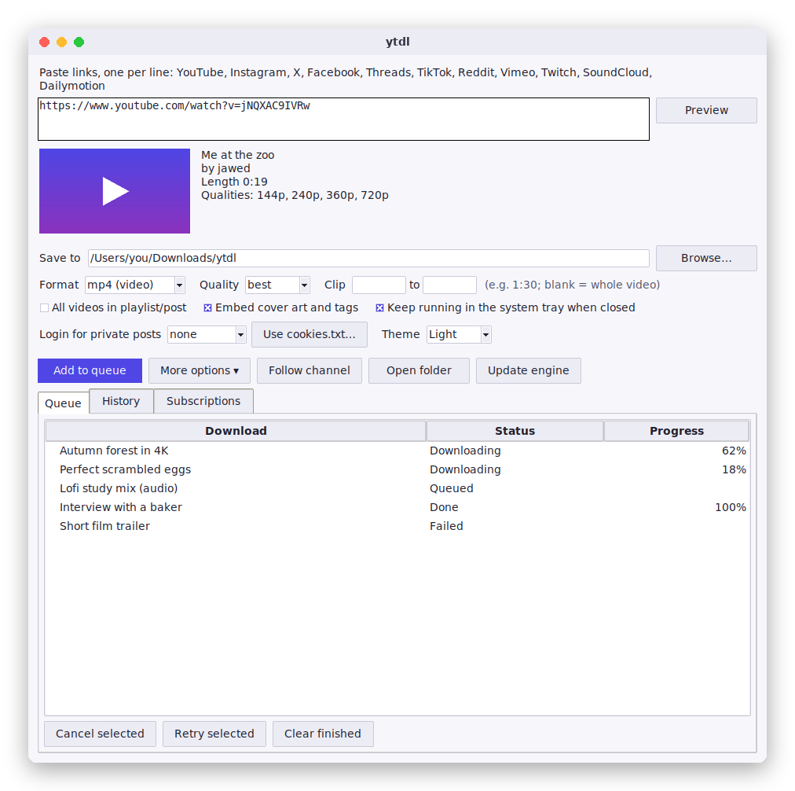
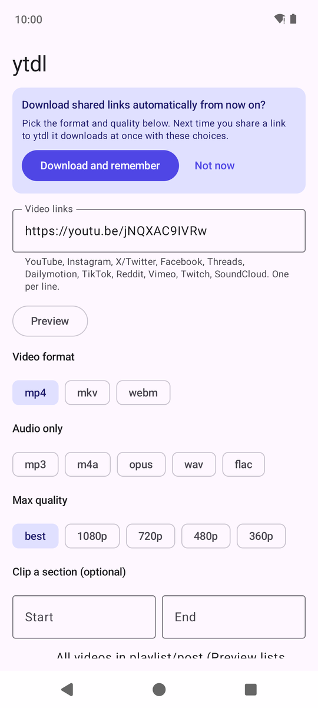
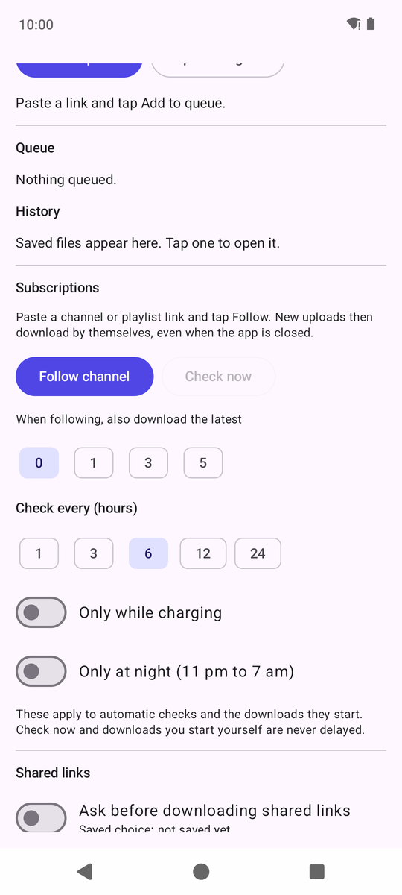
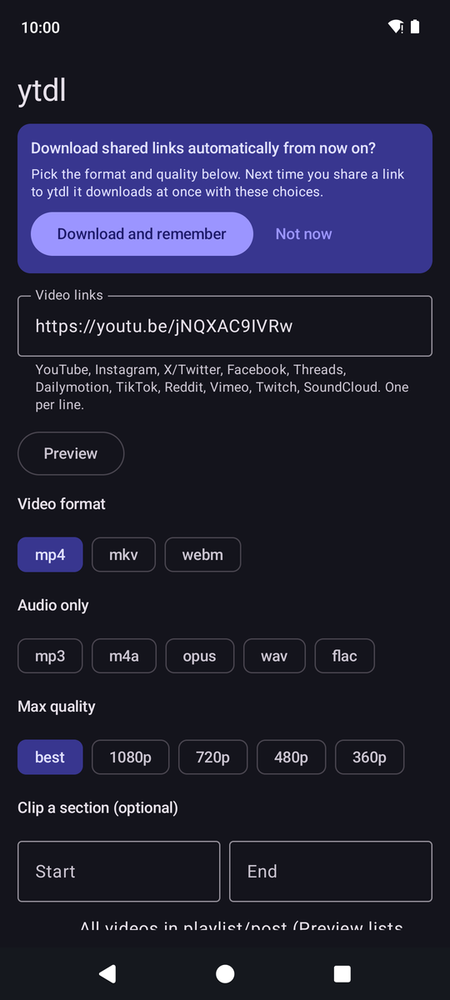
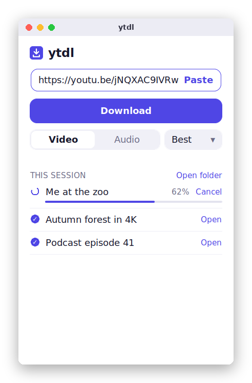
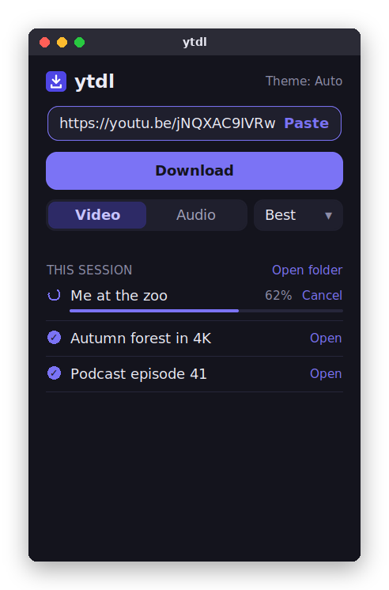
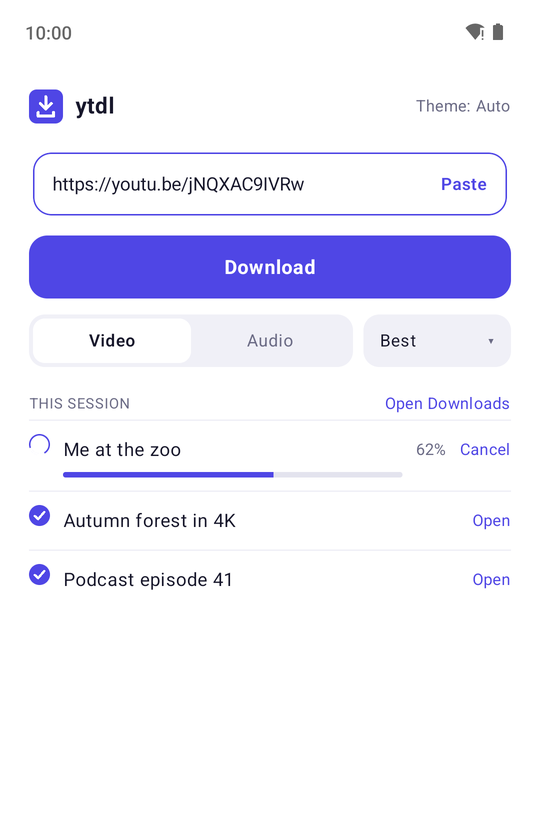
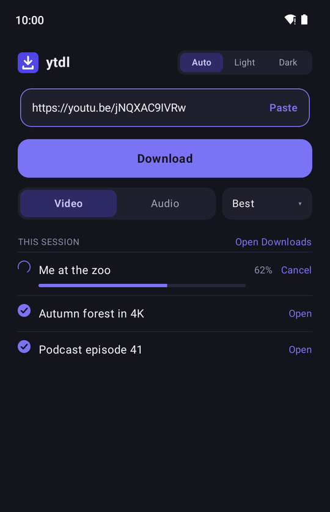

Save videos and audio from the sites you use.
Free, open-source apps for Mac, Windows and Android. Paste a link, pick a format, and the file is yours. Everything runs on your own device, with no account and no web service in between.
Mac, Windows and Android

The desktop app (shown with demo data)



The Android app, in light and dark
Built for getting the job done
The things you'd want from a downloader, without ads or sign-ups.
Video or audio, your format
Save video as mp4, mkv or webm, or just the sound as mp3, m4a, opus, wav or flac. Choose the quality, or clip only the part you need.
A real queue
Add many links, run several downloads at once, set a speed limit, cancel or retry any item. Failed downloads retry themselves when the problem is temporary.
Follow channels
Follow a YouTube channel or playlist and new uploads download by themselves, even when the app is closed. Choose how often, and on Android, only while charging or at night.
Preview first
See the title, thumbnail, length and available qualities before you download. For playlists, tick the videos you want.
Share and go (Android)
Share a link from any app and it downloads straight away with the format you picked once. Channels and playlists always ask first.
Looks after your disk
Keep subscription downloads for a set time, cap their size, and get warned before space runs out. It only ever deletes what subscriptions downloaded.
Private posts
Sign in once (inside the app on Android, or through your browser on desktop) for posts that need an account. Your login stays on your device.
Open and private
Free software under the GPL. No accounts, no tracking, no ads. The only network calls are to the sites you download from and GitHub (for updates and release notices).
Just want the basics? Try ytdl minimal.
A small separate app with one job: paste a link, choose Video or Audio, tap Download. Same layout on your computer and your phone, light and dark (a small Auto / Light / Dark switch in the corner), no settings to wade through.




The minimal apps on desktop and phone (shown with demo data)
Install steps are the same as the full app, below. Minimal skips queues, subscriptions, sign-in, clips and the other advanced options.
Sites that work
Powered by yt-dlp, which keeps up with site changes. ytdl updates it for you.
| Site | Status | Notes |
|---|---|---|
| YouTube | Works | Videos, Shorts, playlists and channels (including following). |
| Works | Posts and reels. Many need you to be signed in. Profiles can't be followed reliably. | |
| X / Twitter | Works | Posts that contain video. Profiles can't be followed. |
| Works | Public videos and reels; others need a sign-in. | |
| Threads | Works | Posts with video. Uses a browser already on your computer (Edge, Chrome, Brave) or your phone's built-in one. |
| Dailymotion | Works | Videos that aren't region-locked. |
| SoundCloud | Works | Public tracks. |
| Vimeo | Sign-in needed | Vimeo now asks for a login on many videos. |
| TikTok, Reddit, Twitch | Supported | Supported by the download engine; not yet tested end to end, so tell us if one fails. |
Install
Pick your device. The apps aren't code-signed (that costs money each year), so Mac and Windows show a one-time warning. The steps below get past it.
Mac
- Open the downloaded file and drag ytdl onto Applications.
- First launch: right-click ytdl, choose Open, then Open again.
- Not sure which Mac you have? Apple menu, About This Mac: "Chip: Apple…" means Apple silicon.
Windows
- Right-click ytdl-windows.zip, choose Extract All, then open ytdl.exe in the folder.
- If "Windows protected your PC" appears, choose More info, then Run anyway.
Android
- Open the file on your phone (Android 10 or newer).
- Allow installs from your browser or Files app when asked, then tap Install.
- Tip: in any app, Share a link to ytdl to download it.
Older versions and release notes are on the releases page.
Questions
Is this allowed?
Downloading is fine for your own use of content you have the right to save, such as your own uploads, public-domain or Creative Commons videos, and personal backups. Many sites' terms restrict downloading without permission, so please only save what you're allowed to. You are responsible for how you use it.
Why do I get a security warning when I open it?
Apple and Microsoft charge developers a yearly fee to sign apps, and ytdl is a free hobby project. The warning only means the app isn't signed. The full source code is public, and the installers are built automatically on GitHub from that code.
Where do my downloads go?
Into a ytdl folder inside your Downloads folder, on every device. On computers you can pick any other folder with the Save to box (Change in ytdl minimal), and on Android with Choose folder, which also works for an SD card. "Default" puts it back.
Does it collect any data?
No. There are no accounts, analytics or ads. The apps talk to the sites you download from, to PyPI and GitHub to update the download engine, and to GitHub to check whether a newer ytdl exists.
A download suddenly stopped working. What do I do?
Sites change often. Use Update engine (Android) or restart the desktop app, which updates by itself. If it still fails, open an issue with the link and the message shown.
Why does Threads need a browser on my computer?
Threads only shows a post's video after its page has run, so ytdl uses Edge, Chrome, Brave or Chromium (already installed on most computers) in the background to read it. On Android it uses the phone's own browser engine.